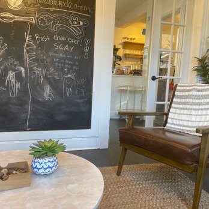

About Us
Welcome to CozyCup Café, where every cup tells a story. Our journey began in a small, charming corner of town, where a passionate group of coffee enthusiasts decided to create a haven for fellow caffeine connoisseurs.
Café Story
Our story is one of dedication to the art of brewing, an unwavering commitment to quality, and an insatiable love for coffee. It all started with a dream: to provide a cozy retreat for people to escape the daily hustle and savor the simple pleasures of life.
Origins
CozyCup Café was founded in 2023 by Elsid Panolino and Harry Cabrera, coffee aficionados with a vision to share exceptional coffee experiences. What began as a small, owned café has blossomed into a beloved community gathering place.
Commitment to Quality
Quality is at the heart of everything we do. Our baristas are not just experts; they are storytellers who craft each cup with precision and care, sharing the tale of the beans' origins with every pour. We are committed to providing our customers with the finest coffee, pastries, and service, ensuring that every visit to CozyCup Café is a memorable one.
But CozyCup Café is not just about coffee; it's about creating a warm and welcoming atmosphere. Whether you're here for a quiet moment of reflection, a friendly chat, or a business meeting, our café is your home away from home. It's a place where friendships are forged, ideas are born, and memories are made.
Our Mission
At CozyCup Café, our mission is to provide a cozy and welcoming environment for coffee enthusiasts. We strive to create a space where every cup of coffee is a delightful experience and where our customers can find comfort, inspiration, and a sense of belonging. Our commitment to quality and hospitality is at the core of our mission, and we invite you to be a part of it.
Meet the Team

Elsid Rick Panolino
Elsid Rick Panolino, the heart and soul of our cozy coffee shop, is a passionate coffee connoisseur with a flair for creating warm, inviting spaces. With a deep love for coffee and a commitment to quality, Elsid curates an unforgettable coffee experience for our cherished patrons. His dedication to crafting the perfect cup and fostering a welcoming atmosphere defines our small coffee haven.

Harry Ericson Cabrera
Harry Ericson Cabrera, a dedicated member of our team, brings warmth to every cup served. With a genuine smile and a passion for coffee, Harry ensures that each customer's visit is memorable. From crafting exquisite brews to creating a welcoming ambiance, our staff is the heart of the coffee shop experience.